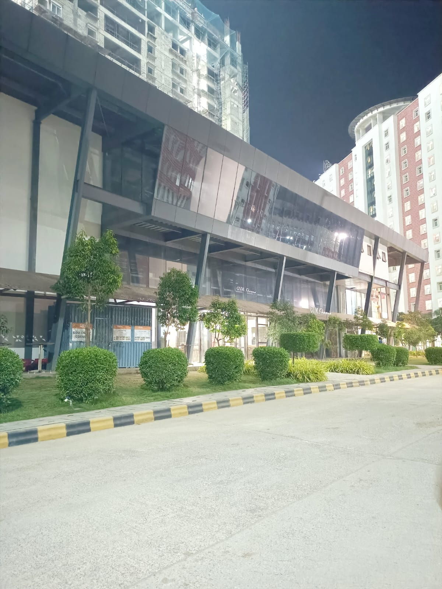
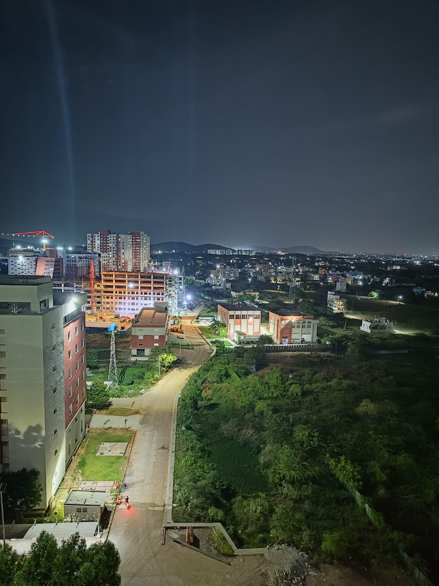
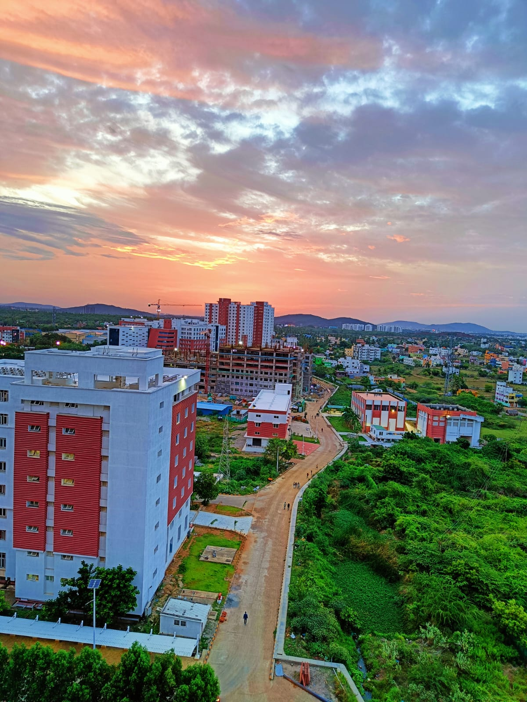
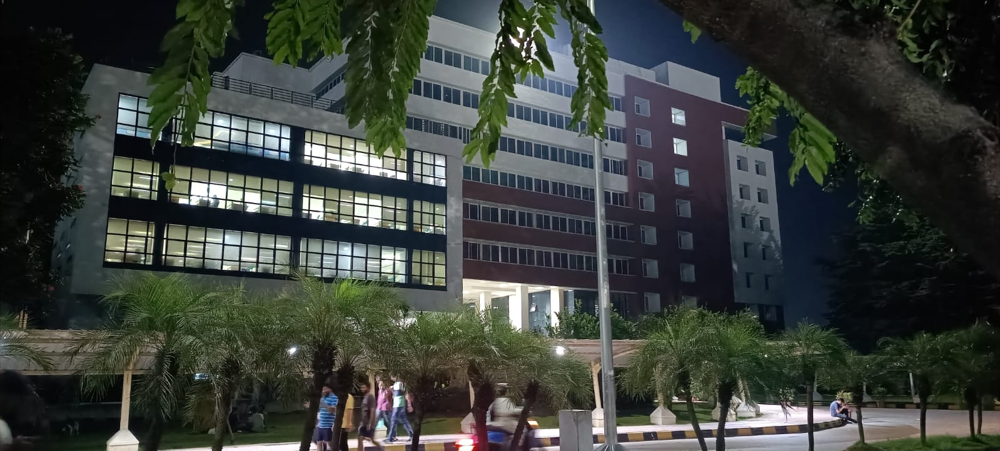
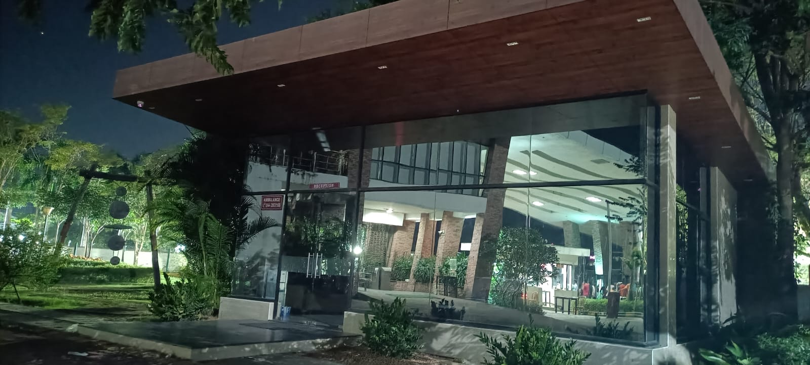

Welcome to our website!
About Me
21BAI1759
KALYAN CHAKRAVARTHY
EMAIL ID: kalyan.chakravarthy2021@vitstudent.ac.in
VELLORE INSTITUTE OF TECHNOLOGY CHENNAI
21BAI1759
KALYAN CHAKRAVARTHY
EMAIL ID: kalyan.chakravarthy2021@vitstudent.ac.in
VELLORE INSTITUTE OF TECHNOLOGY CHENNAI
VIT Chennai, one of the leading engineering colleges in India, offers the best exposure in terms of world class education, internship opportunities, top-notch placement opportunities, and infrastructural amenities. We ensure that the graduates walk out with many skills and learning. We provide a domain for polishing technical mastery and interpretive and analytical skills, which is the need of the hour. VIT Chennai, fosters principles and ensures to achieve the mission and vision to enrich the learning process for the future leaders of our society. VIT was established in 1984 as a self-financing institution called the Vellore Engineering College under Section 3 of the University Grants Commission (UGC) Act, 1956. VIT Chennai was established in 2010 by Dr G. Viswanathan, a former parliamentarian and a profound minister in Tamil Nadu Government. Mr Sankar Viswanathan, Dr Sekar Viswanathan, and Mr G.V Selvam are the Vice Presidents of our institute.
We place students in top-notch reputed companies that offer wide exposure and equip them for their masters in the future. We have successfully placed 1000+ candidates in top-notch companies. We hold the highest number of recruitments through placements and offer lucrative international internship opportunities as well. Here we present a list of the top recruiters that visit VIT Chennai for campus recruitment: Microsoft , Amazon, Infosys, Hero, ITC and Mahindra.
    